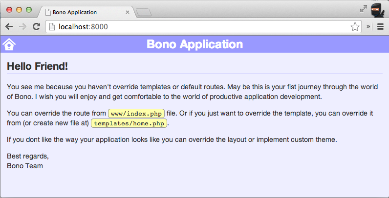

by @reekoheek May 2014
<void />
PHP framework to build enterprise-wise application
Better modularity
Rapid prototyping and scaffolding
Extends from Slim Framework - http://www.slimframework.com
PHP ORM-like framework that is not ORM
No normalization no join just data
Inspired by NoSQL (Mongo)
Works for MongoDB, MySQL, Oracle, SQLite3
(contributions?)
BONO for the process
NORM for the data access
| Node.JS | see http://nodejs.org |
|---|---|
| PAX | npm install -g xinix-pax |
| MongoDB | see http://docs.mongodb.org |
| MongoDB Client | pecl install mongo |
| Install archetype |
mkdir myproject cd myproject xpax init bono-arch |
|---|---|
| Run server | xpax serve |
http://localhost:8000
Add new URL endpoint for your web/app
GET
$app->get('/books/:id', function ($id) {
//Show book identified by $id
});POST
$app->post('/books', function () {
//Create book
});PUT
$app->put('/books/:id', function ($id) {
//Update book identified by $id
});DELETE
$app->get('/books/:id', function ($id) {
//Show book identified by $id
});Unfortunately, modern browsers do not provide native support for HTTP PUT and DELETE requests. To work around this limitation, ensure your HTML form’s method attribute is "post", then add a method override parameter to your HTML form like this:
<form action="/books/1" method="post">
... other form fields here...
<input type="hidden" name="_METHOD" value="PUT"/>
<input type="submit" value="Update Book"/>
</form>$app->get('/books/:one/:two', function ($one, $two) {
echo "The first paramter is " . $one;
echo "The second parameter is " . $two;
});$app->get('/archive(/:year(/:month(/:day)))', function ($year = 2010, $month = 12, $day = 05) {
echo sprintf('%s-%s-%s', $year, $month, $day);
});Norm\Provider\NormProviderreturn array(
...
'bono.providers' => array(
'\\Norm\\Provider\\NormProvider' => array(
...
),
'\\App\\Provider\\AppProvider',
'\\Another\\Provider\\JustAnotherProvider' => null,
),
...
);// file: $PROJECT_PATH/src/App/Provider/AppProvider.php
namespace App\Provider;
use \Bono\Provider;
class AppProvider extends Provider
{
public function initialize()
{
$app = $this->app;
// you can do something here, such as:
// - create new route
// - initializing some boilerplate codes
}
}return array(
...
'bono.middlewares' => array(
'\\Bono\\Middleware\\ControllerMiddleware' => array(
...
),
'\\Bono\\Middleware\\NotificationMiddleware',
'\\App\\Middleware\\MyMiddleware',
),
...
);namespace App\Middleware;
use \Slim\Middleware;
class MyMiddleware extends Middleware
{
public function call()
{
// Do something before route call
// Optionally call the next middleware
$this->next->call();
// Do something after route call
}
}Lets create single module that can do:
return array(
'bono.providers' => array(
'\\Norm\\Provider\\NormProvider' => array(
...
'collections' => array(
'mapping' => array(
'Book' => array( //-- module that I want to create
'schema' => array(
'title' => String::create('title')->filter('trim|required|unique:User,username'),
'author' => Reference::create('author')->to('Author'),
'publisher' => Reference::create('published')->to('Publisher', 'name'),
),
),
'Author' => array(
...
);return array(
'bono.middlewares' => array(
'\\Bono\\Middleware\\ControllerMiddleware' => array(
'default' => '\\Norm\\Controller\\NormController',
'mapping' => array(
'/book' => null, //-- controller for my module
'/author' => '\\App\\Controller\\CustomAuthorController',
),
),
...Imagine that you have a bucket (collection) full of data and all you want to do just put new data, or get existing data and do whatever you want (update or delete)
$myCollection = \Norm::factory('MyCollection');$entry = \Norm::factory('MyCollection')->newInstance;
$entry->set(array(
'field_a' => 'Some data for A',
'field_b' => 'Some data for B',
...
))
$entry->set('field_c', 'Append data for C');
$entry['field_d'] = 'Append data for D';
$entry->save();$entry = \Norm::factory('MyCollection')->findOne($id);
$entry['field_d'] = 'Change the data';
$entry->save();$entry = \Norm::factory('MyCollection')->findOne($id);
$entry->remove();$entries = \Norm::factory('MyCollection')->find(array(
'name!like' => 'some',
'age!lte' => 25
));
foreach ($entries as $entry) {
...
}Events for your data
Triggered before saving
class Timestampable
{
public function saving($model)
{
// if new instance
if (is_null($model['$id'])) {
// set created_time
$model['$created_time'] = $now;
} else {
// set modified_time
$model['$modified_time'] = $now;
}
}
}Triggered after saved
class Journalize
{
public function saved($model)
{
// journal update
}
}return array(
'bono.providers' => array(
'\\Norm\\Provider\\NormProvider' => array(
...
'collections' => array(
'default' => array(
'observers' => array(
'\\Norm\\Observer\\Timestampable',
),
),
'mapping' => array(
'Book' => array(
'observers' => array(
'\\App\\Observer\\Journalize' => array(
// you can provide configuration
// option for the observer
),
),
'schema' => array(
...Many thanks to opensource
https://github.com/xinix-technology/bono